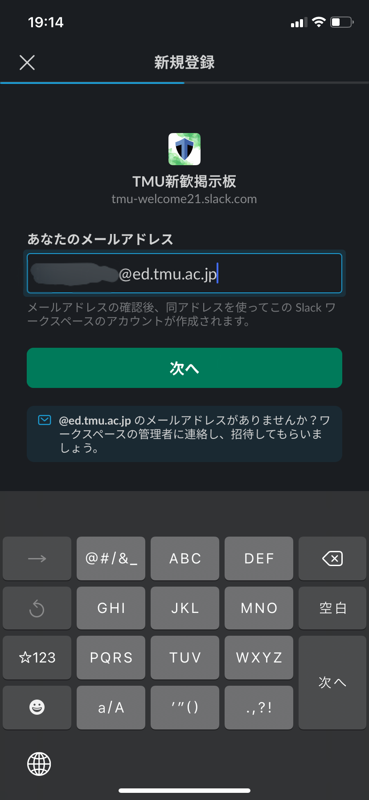
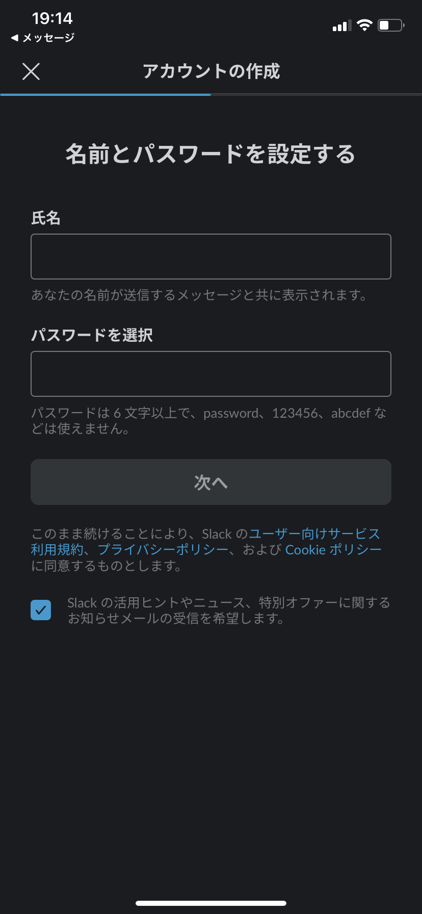

サークル紹介：Slackによる掲示板について
製作中
目次
Slackとは？
端的に申しますと、ビジネス向け高機能チャットアプリケーションです。 テーマごとに別れて、チャンネルというLINEのグループチャットのような部屋を設置可能ですので、話題の混線を回避することができます。 さらに、チャンネル内の発言一つ一つにスレッドを作ることができるので、どの話題に返信しているか明確となります。 その他、個人チャットに相当するダイレクトメッセージ機能（以降、DMとします）も存在します。
LINEオープンチャットでは話が混線したり、話題を絞って情報を得ることができないと考え、Slackにしております。 ご理解のほどよろしくお願いいたします。
Slack参加の流れ
画像はiPhoneの場合です。PCやAndroidでも画面は違えど、手順は同様となります。
- こちらより、アプリのダウンロードをします。
- 下にある招待リンクのボタンを押します。
- 図1のようなメールアドレスを入力する画面が出るため、情報リテラシーで得られる自分の学内メールアドレス「〇〇@ed.tmu.ac.jp」を入力します。
- 届いたメールのリンクをクリックすると、図2のような画面となるはずです。
- 氏名は本名である必要はありません。また、下のチェックボックスは付けなくても差し支えないです。
|  |  |
| 図1：メールアドレス入力 | 図2：情報登録 |
招待リンク
Participate Slack @ed.tmu.ac.jp以外のドメインによる参加は拒否するので、ご注意ください。
DMの方法・通報先
| 図1：メールアドレス入力 | 図2：情報登録 |
チャンネルの追加
| 図1：メールアドレス入力 | 図2：情報登録 |
チャンネルの退出
| 図1：メールアドレス入力 | 図2：情報登録 |